KNozz - Connector Pinouts
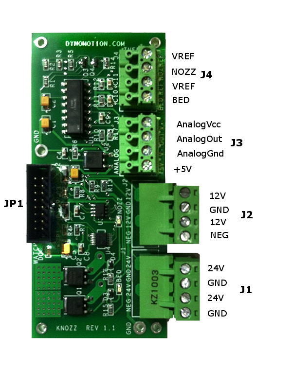
KNozz Connection to KFLOP JP1
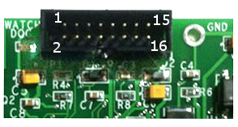
JP1 provides all internal signal and power connections to KFLOP. This 16 pin ribbon connection should be as short as possible to avoid noise and crosstalk as the cable forms a high speed communication link. It can be connected to either KFLOP JP4 or JP6. However for the Analog Output to be functional JP6 must be used which has KFLOP's PWM Outputs.
PWMIN is used for the isolated Analog Output. BED HEAT and NOZ Heat control the two High power FET outputs. The ADC signals are SPI signals to the dual channel ADC for reading the Thermistor Temperature readings. See KNozz C Program Examples.
| Pin | KFLOP Name (JP4) |
KFLOP Name (JP6) |
KNozz Name |
| 1 | VDD5 | VDD5 |
VDD5 |
| 2 | VDD12 | VDD12 |
|
| 3 | VDD33 | VDD33 |
VDD33 |
| 4 | RESET# | RESET# |
|
| 5 | IO16 | IO26 |
PWMIN |
| 6 | IO17 | IO27 |
|
| 7 | IO18 | IO28 |
|
| 8 | GND | GND |
GND |
| 9 | GND | GND | GND |
| 10 | IO19 | IO29 | |
| 11 | IO20 | IO30 | BED HEAT |
| 12 | IO21 | IO31 | NOZ HEAT |
| 13 | IO22 | IO32 | ADC DIN |
| 14 | IO23 | IO33 | ADC #CS |
| 15 | IO24 | IO34 | ADC DOUT |
| 16 | IO25 | IO35 | ADC CLK |
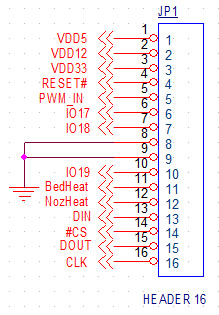
KNozz J1 and J2 High Power FET Outputs
KNozz provides two independent opto isolated high current FET switch outputs. Although 3D Printer Bed Heaters are often driven with a 24V supply and Nozzle Heaters are often driven by a 12V supply any voltage from 12 to 48V can be applied and switched.
Connect the + Supply Voltage to Bed24V (or Noz12V) and the Supply GND to BedGND (or NozGND). Connect the Heater Element between Bed24V (or Noz12V) and the BedNeg (or NozNeg) terminals. The "Neg" terminals are driven the Supply GND when active and open circuit when inactive.
Both Outputs have an associated LED to indicate when Voltage is applied to the Output. The Output and LED will only be active when the WatchDog is active, the associated input is being driven, and a power supply is attached and providing power.
The BED HEAT (or NOZ HEAT) inputs are active high (they must be driven > 2.0V to enable the FET Outputs).
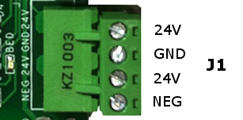
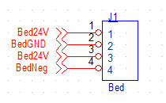
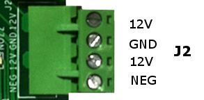
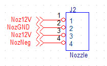
KNozz J3 Analog Output
KNozz provides one opto isolated Analog output. A positive isolated supply voltage should be applied across AnalogVcc and AnalogGnd. The AnalogOut voltage will then be a function of the PWM duty cycle. Note the Output is normally isolated from KFLOP GND so make sure to use the AnalogGnd as the voltage reference.
The PWM input pin is Pin5 of JP1. KFLOP JP6 Aux1 connector has PWM0 output on this pin. The AnalogOut function will only work when KNozz is connected to KFLOP JP6 Aux1.
The PWM to Analog Circuit used is the same as for KStep. See the KStep documentation for more information.
See the Spindle_S_KNozz.c example for how to interface KMotionCNC's S command to the Analog Output.
A Terminal with +5V connected to KFLOP +5V is also provided.
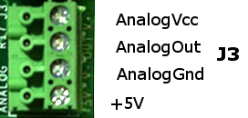
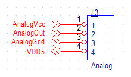
KNozz J4 Thermistor Analog Inputs
KNozz provides two 12-bit analog inputs normally used for Nozzle and Bed Temperature measurement. A C Program running in KFLOP is normally used to bit-bang SPI to read the ADC values, determine the temperatures, and control the Heaters. See the C Program KNozz Examples.
A single 3.3V (+/-1%) Reference is also provided that is also used for the Internal ADC Converter. Normally Thermistors used with 3D Printers change resistance from ~100K ohms at room temperature to ~5K ohms at build temperature. The external Themistor should be connected between the VREF terminal and the NOZZ (or BED) Terminals.
A Thermistor and internal 10K ohm (+/- 1%) resistor form a Voltage divider. See the circuit below.
The relationship between input Voltage to ADC reading in counts is:
ADC = 4097 x Vin / VREF
The relationship between Thermistor resistance R and ADC reading in counts is:
ADC = 4097 x 10K / (10K + R)
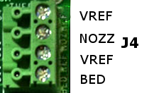
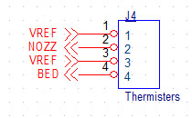
Each Thermistor input circuit includes a filter capacitor (0.1uF) that will slow response and reduce noise. The response time will change depending how the input is driven but at high resistance the input response will be:
Tau = RC = 10K x 0.1uF = 1ms
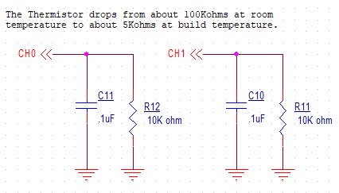
WatchDog
KNozz includes a WatchDog Circuit to help avoid thermal runaway of the Heaters if the FET Outputs are somehow turned on while the temperatures are not being actively monitored. To read the temperatures the ADC CLK input must be toggled. If the ADC Clock stops togging, then the WatchDog Circuit trips and disables both FET Outputs after approximately 3ms. The WatchDog LED illuminates when the ADC Clock is toggling and the Outputs are enabled to be turned on.